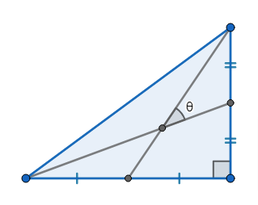

Given a right-angled triangle with integer sides, the smaller angle formed by the two medians drawn on the the two perpendicular sides is denoted by $\theta$.

Let $f(\alpha, L)$ denote the sum of the sides of the right-angled triangle minimizing the absolute difference between $\theta$ and $\alpha$ among all right-angled triangles with integer sides and hypotenuse not exceeding $L$.
If more than one triangle attains the minimum value, the triangle with the maximum area is chosen. All angles in this problem are measured in degrees.
For example, $f(30,10^2)=198$ and $f(10,10^6)= 1600158$.
Define $F(N,L)=\sum_{n=1}^{N}f\left(\sqrt[3]{n},L\right)$.
You are given $F(10,10^6)= 16684370$.
Find $F(45000, 10^{10})$.
solve(N=10, L=1000000) → ?solve(N=45000, L=10000000000) → ?